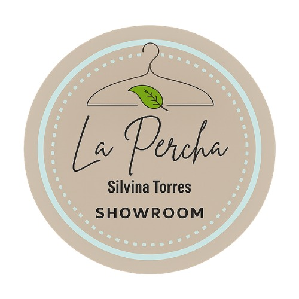

Insignia circular: percha de alambre, hoja verde, "La Percha" en script y "SHOWROOM" en capitales espaciadas. Mantener aire alrededor; no estirar ni recolorear. Sobre fondos oscuros, usar el sello completo dentro de su círculo claro.